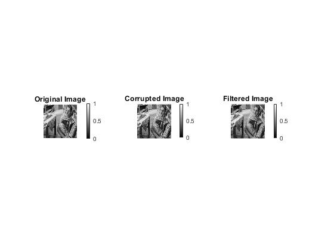
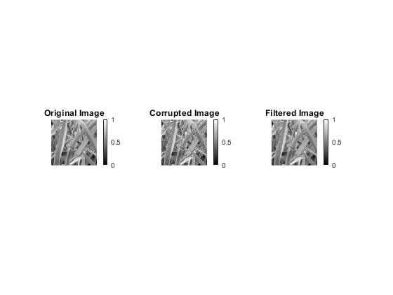
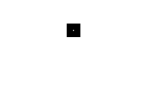

Contents
MyMainScript
tic;
image1 = load("..\data\barbara.mat");
image1 = mat2gray(image1.imageOrig);
image2 = imread("..\data\grass.png");
image2 = mat2gray(image2);
image3 = imread("..\data\honeyCombReal.png");
image3 = mat2gray(image3);
corrupting images using Gaussian noise
noisy_image1 = image1 + randn(size(image1)) .* 0.05;
noisy_image2 = image2 + randn(size(image2)) .* 0.05;
noisy_image3 = image3 + randn(size(image3)) .* 0.05;
perform bilateral filtering over corrupted images
optimal_sigma_space = 0.5;
optimal_sigma_range = 100;
filtered_image1 = myBilateralFiltering(noisy_image1, optimal_sigma_space, optimal_sigma_range);
figure('Name', 'Bilateral Filtering on Image 1');
subplot(1,3,1), imshow(image1), colorbar, title('Original Image');
subplot(1,3,2), imshow(noisy_image1), colorbar, title('Corrupted Image');
subplot(1,3,3), imshow(filtered_image1), colorbar, title('Filtered Image');
filtered_image2 = myBilateralFiltering(noisy_image2, optimal_sigma_space, optimal_sigma_range);
figure('Name', 'Bilateral Filtering on Image 2');
subplot(1,3,1), imshow(image2), colorbar, title('Original Image');
subplot(1,3,2), imshow(noisy_image2), colorbar, title('Corrupted Image');
subplot(1,3,3), imshow(filtered_image2), colorbar, title('Filtered Image');
filtered_image3 = myBilateralFiltering(noisy_image3, optimal_sigma_space, optimal_sigma_range);
figure('Name', 'Bilateral Filtering on Image 3');
subplot(1,3,1), imshow(image3), colorbar, title('Original Image');
subplot(1,3,2), imshow(noisy_image3), colorbar, title('Corrupted Image');
subplot(1,3,3), imshow(filtered_image3), colorbar, title('Filtered Image');
 
find the RMSD
test1_image1 = myBilateralFiltering(noisy_image1, 0.9 * optimal_sigma_space, optimal_sigma_range);
test2_image1 = myBilateralFiltering(noisy_image1, 1.1 * optimal_sigma_space, optimal_sigma_range);
test3_image1 = myBilateralFiltering(noisy_image1, optimal_sigma_space, 0.9 * optimal_sigma_range);
test4_image1 = myBilateralFiltering(noisy_image1, optimal_sigma_space, 1.1 * optimal_sigma_range);
test1_image2 = myBilateralFiltering(noisy_image2, 0.9 * optimal_sigma_space, optimal_sigma_range);
test2_image2 = myBilateralFiltering(noisy_image2, 1.1 * optimal_sigma_space, optimal_sigma_range);
test3_image2 = myBilateralFiltering(noisy_image2, optimal_sigma_space, 0.9 * optimal_sigma_range);
test4_image2 = myBilateralFiltering(noisy_image2, optimal_sigma_space, 1.1 * optimal_sigma_range);
test1_image3 = myBilateralFiltering(noisy_image3, 0.9 * optimal_sigma_space, optimal_sigma_range);
test2_image3 = myBilateralFiltering(noisy_image3, 1.1 * optimal_sigma_space, optimal_sigma_range);
test3_image3 = myBilateralFiltering(noisy_image3, optimal_sigma_space, 0.9 * optimal_sigma_range);
test4_image3 = myBilateralFiltering(noisy_image3, optimal_sigma_space, 1.1 * optimal_sigma_range);
num_pixels = size(image1, 1) * size(image1, 2);
rmsd1_image1 = sqrt(sum((image1(:) - filtered_image1(:)).^2) / num_pixels);
rmsd2_image1 = sqrt(sum((image1(:) - test1_image1(:)).^2) / num_pixels);
rmsd3_image1 = sqrt(sum((image1(:) - test2_image1(:)).^2) / num_pixels);
rmsd4_image1 = sqrt(sum((image1(:) - test3_image1(:)).^2) / num_pixels);
rmsd5_image1 = sqrt(sum((image1(:) - test4_image1(:)).^2) / num_pixels);
fprintf("Image 1\n-----------\n");
fprintf("RMSD with optimal parameters = %f\n", rmsd1_image1);
fprintf("RMSD with 0.9sigma_space = %f\n", rmsd2_image1);
fprintf("RMSD with 1.1sigma_space = %f\n", rmsd3_image1);
fprintf("RMSD with 0.9sigma_intensity = %f\n", rmsd4_image1);
fprintf("RMSD with 1.1sigma_intensity = %f\n\n", rmsd5_image1);
num_pixels = size(image2, 1) * size(image2, 2);
rmsd1_image2 = sqrt(sum((image2(:) - filtered_image2(:)).^2) / num_pixels);
rmsd2_image2 = sqrt(sum((image2(:) - test1_image2(:)).^2) / num_pixels);
rmsd3_image2 = sqrt(sum((image2(:) - test2_image2(:)).^2) / num_pixels);
rmsd4_image2 = sqrt(sum((image2(:) - test3_image2(:)).^2) / num_pixels);
rmsd5_image2 = sqrt(sum((image2(:) - test4_image2(:)).^2) / num_pixels);
fprintf("Image 2\n-----------\n");
fprintf("RMSD with optimal parameters = %f\n", rmsd1_image2);
fprintf("RMSD with 0.9sigma_space = %f\n", rmsd2_image2);
fprintf("RMSD with 1.1sigma_space = %f\n", rmsd3_image2);
fprintf("RMSD with 0.9sigma_intensity = %f\n", rmsd4_image2);
fprintf("RMSD with 1.1sigma_intensity = %f\n\n", rmsd5_image2);
num_pixels = size(image3, 1) * size(image3, 2);
rmsd1_image3 = sqrt(sum((image3(:) - filtered_image3(:)).^2) / num_pixels);
rmsd2_image3 = sqrt(sum((image3(:) - test1_image3(:)).^2) / num_pixels);
rmsd3_image3 = sqrt(sum((image3(:) - test2_image3(:)).^2) / num_pixels);
rmsd4_image3 = sqrt(sum((image3(:) - test3_image3(:)).^2) / num_pixels);
rmsd5_image3 = sqrt(sum((image3(:) - test4_image3(:)).^2) / num_pixels);
fprintf("Image 3\n-----------\n");
fprintf("RMSD with optimal parameters = %f\n", rmsd1_image3);
fprintf("RMSD with 0.9sigma_space = %f\n", rmsd2_image3);
fprintf("RMSD with 1.1sigma_space = %f\n", rmsd3_image3);
fprintf("RMSD with 0.9sigma_intensity = %f\n", rmsd4_image3);
fprintf("RMSD with 1.1sigma_intensity = %f\n\n", rmsd5_image3);
Image 1
-----------
RMSD with optimal parameters = 0.039233
RMSD with 0.9sigma_space = 0.040300
RMSD with 1.1sigma_space = 0.040121
RMSD with 0.9sigma_intensity = 0.039233
RMSD with 1.1sigma_intensity = 0.039233
Image 2
-----------
RMSD with optimal parameters = 0.034239
RMSD with 0.9sigma_space = 0.037727
RMSD with 1.1sigma_space = 0.032303
RMSD with 0.9sigma_intensity = 0.034239
RMSD with 1.1sigma_intensity = 0.034239
Image 3
-----------
RMSD with optimal parameters = 0.035024
RMSD with 0.9sigma_space = 0.038328
RMSD with 1.1sigma_space = 0.033297
RMSD with 0.9sigma_intensity = 0.035024
RMSD with 1.1sigma_intensity = 0.035024
Mask for spatial Gaussian
windowSize = 9;
[x, y] = meshgrid(-windowSize:windowSize, -windowSize:windowSize);
distances_squared = x.^2 + y.^2;
spatial_kernel = (1 / sqrt(2 * pi * optimal_sigma_space^2)) * ...
exp(-0.5 * distances_squared / optimal_sigma_space^2);
figure('Name', 'Mask');
imshow(spatial_kernel);

toc;
Elapsed time is 18.334391 seconds.